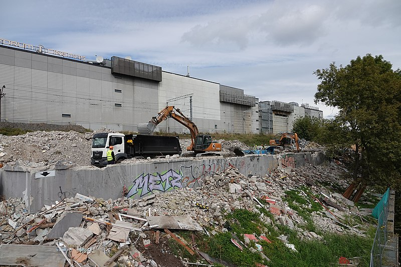

<div class="iespejas-wrapper">
    <app-link-button [isReverse]="true"
                     [routerLink]="'/skersli'">
    </app-link-button>
    <app-link-button class="link-button-right"
                     [routerLink]="'/piedzivojumi'">
    </app-link-button>
</div>

<div class="iespejas-content">
    <div class="iespejas-content-text">
        <div class="iespejas-content-title">{{ 'iespejas.title' | translate }}</div>
        <div>
            <div>{{ 'iespejas.paragraph1' | translate }}</div>
            <br>
            <div>{{ 'iespejas.paragraph2' | translate }}</div>
            <br>
            <div>{{ 'iespejas.paragraph3' | translate }}</div>
        </div>
    </div>

    <div class="images">
        <div class="iespejas-picture">
            
        </div>
        <div class="iespejas-picture">
            
        </div>
    </div>
</div>
